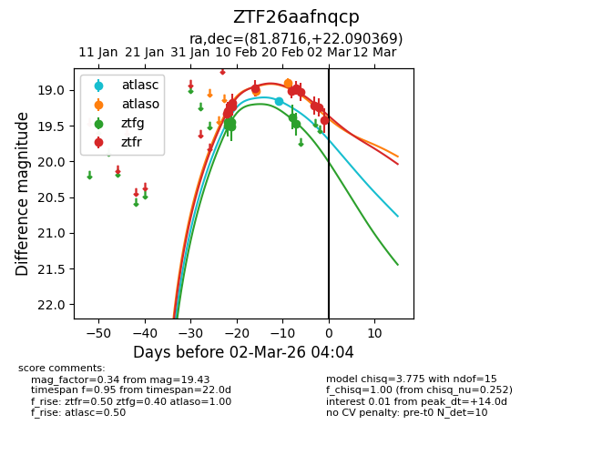
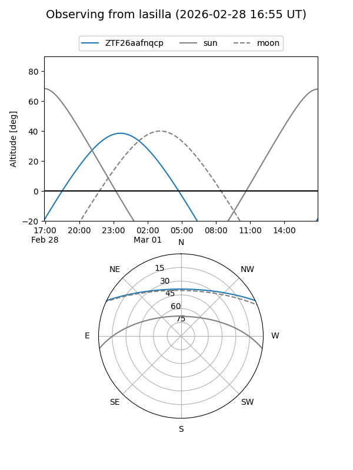
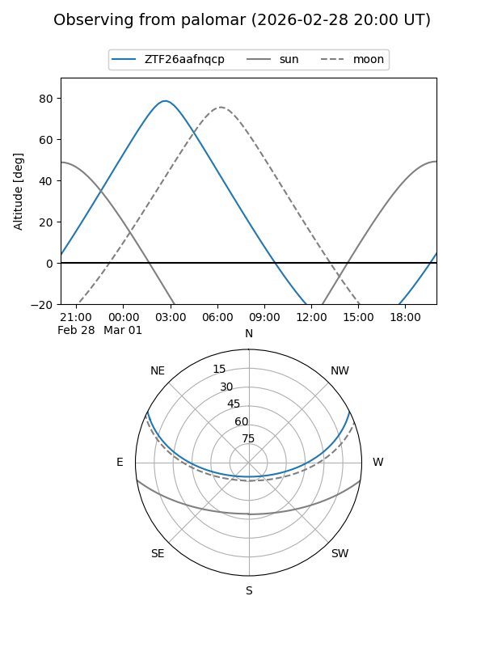
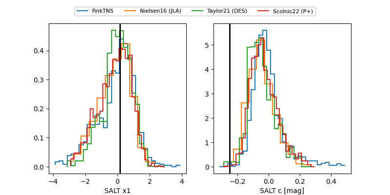

ZTF26aafnqcp
Target ZTF26aafnqcp at 2026-03-02 04:05
Aliases and brokers:
FINK: link
Lasair: link
ALeRCE: link
alt names
ZTF26aafnqcp (ztf,fink_ztf)
Coordinates:
equatorial (ra, dec) = 81.8716,+22.09037
equatorial (HMS+DMS) = 05:27:29.19,+22:05:25.33
galactic (l, b) = (183.6045,-7.11642)
Flags:
Photometry:
last atlasc=19.16, atlaso=18.90, ztfg=19.48, ztfr=19.43
1 atlasc, 2 atlaso, 6 ztfg, 11 ztfr detections
Lightcurve

Visibility


Additional plots
